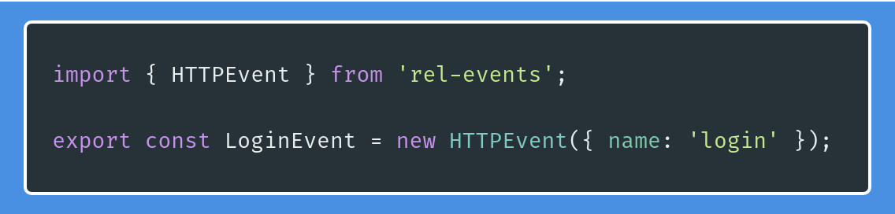
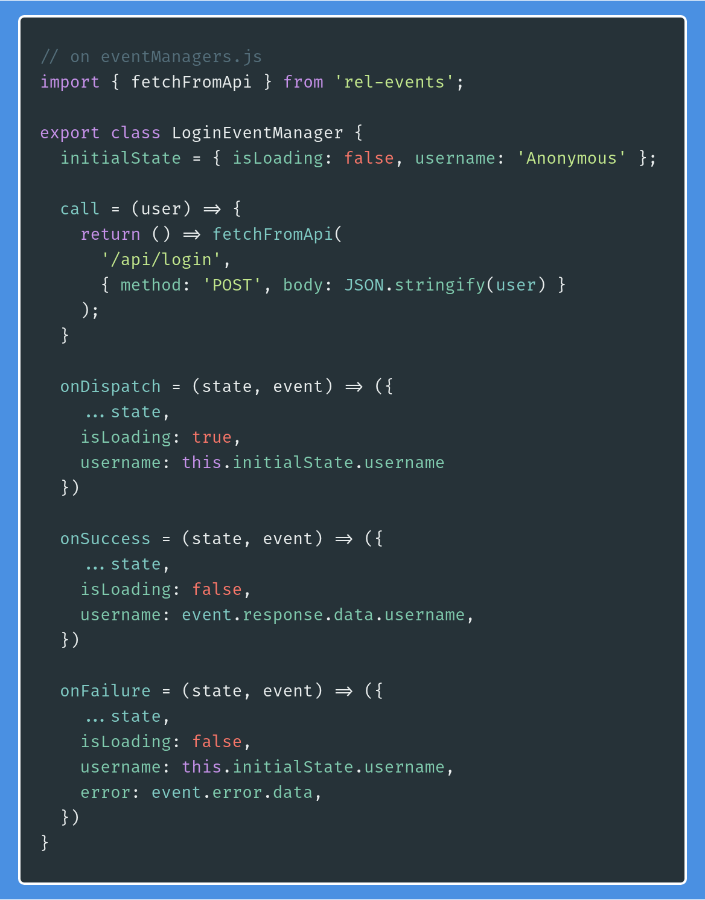

Keeping global state management sane with rel-events

Maintaining a big and complex react app is not for amateurs. Whatever you may choose to manage your app state, chances are that it's hard to pick up, like redux, or really convoluted, like making yourself a service layer. With the goal of making it easy for new developers to jump into our projects, we at Labcodes decided it was time to give this problem a little more thought. Our answer was rel-events.
Why another library to manage states?

Whenever I think of making something new and shiny, this xkcd strip comes to haunt me. Believe me, I don't want to be the kind of person that does everything themselves, and that's one of my grievances with the fork mentality. However, it was about time I did something to address a pesky problem I deal with daily: using whatever library to separate business logic from react components.
At the end of the day, after much thought, I always end up surrendering and running npm install redux react-redux --save. I even shared my basic tools to deal with redux on our react-redux-api-tools package.
And by no means I hate redux; in fact, I love it. It gets the job done, it's ultra flexible, with low side effects. But let's be frank here: the discomfort of reading mapStateToProps for the first time is real. It took me a long while to properly understand what was going on. Then there are actions, action creators, reducers, dispatches and middlewares, and sagas, and async dispatches; it's neverending.
After those confusing and long first months, things started to get easier, but way, way too verbose. I always thought that redux felt a lower level tool, and that I was always in need of specifying, step by step, exactly and strictly what and how things should be done. No abstraction at all. A lot of copy and paste, though.
I came to the conclusion that it would be nice to have all the features I would like in my redux configuration - a proper HTTP request flow, less repetition, meaningful connection between actions and reducers -, without sacrificing anything. I got the green light to develop internally a solution for that: rel-events.
Cool, but what's rel-events?
rel-events is a React Events Library that takes the concept of events, present in redux, to a higher level of abstraction. It's a thin layer over redux that enables you to stop thinking about actions, reducers, stores and middlewares, so you can focus on what needs to be done: executing domain logic reactively when events pop up.
To do that, let's imagine a simple scenario: we need to enable a user to log into our app.
You could do the whole request flow inside your components, but as we stated on our previous blog post, we don't really recommend doing that - it always ends up messy. We could use redux, but then our junior developers would need to pass that mapStateToProps hurdle, and sometimes we don't have the luxury of taking our time. We could use sagas, but then redux is back with a vengeance.
Now, forget about actions and reducers and imagine we have an object called LoginEvent. Whenever we call it passing an email and password, things get done and data comes through to the component. Imagine you don't need to know anything but its name. No reducers, no actions, no connect or mapStateToProps. It would be something like this:

Cool, but what about the whole behavior? Where's the logic to make the request? How to deal with bad requests? Let's say, besides the Event, we have something that manages the event flow, an Event Manager:

That's better. But how is this manager implemented? Because, if it needs to deal with the event flow, it needs to do a lot of stuff: know how to make the request and what to do when the request succeeds or fails. Oh, and we need an intermediary state, because we love loading spinners! Hell, I forgot about the inital state of the event as well! Ok, ok, let's see:

That's about it, right? But, hey, how do we trigger it? And how do I make the Event register which Components are able to trigger it? How does the component get the data from it? We're almost there:

And that's exactly the current API for a HTTPEvent from rel-events. No actions, no reducers, no coupling between the logic and the component layers, nothing. Of course, it needs some configuration to hook it up with redux, but it's mostly a one time setup, very well documented in our docs.
That sounds... nice! But what about features? I want features!
With our current beta version (0.1.3 as of September 2019), you're able to:
- a basic Event type (for the times you don't need to make HTTP requests);
- Events/HTTPEvents chaining (useful for fetching more data when a request is done);
- multiple Events registering to the same Component (you'll probably have a Component that needs to listen to multiple Events);
- execute code after dispatching an Event (with
afterDispatch); - execute code after a request is successful (with
afterSuccess); - execute code after a request has failed (with
afterFailure); - evaluate if an event should be dispatched or not (with the
shouldDispatchmethod).
And more! All that without the cognitive burden, the crazy constants, the store names and all the bad developer experience from redux. The best part: no huge learning curve. This post has basically all you need to know to use our lib. Really.
So if you liked it, take a look at our github repo to get started and share the love! Thanks for your attention, and see you next time!